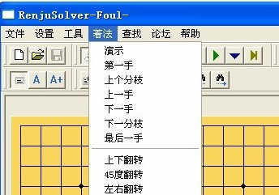

棋谱的记忆
#1 棋谱的记忆作者：4 发表时间：2009-6-25 2:38:39
在二十七刀的劝说下，做了此功能：着法-》演示。
若您辛苦地做了一份定式谱，那么如何对棋谱进行有效的记忆？
用爱五子棋打谱软件打开棋谱后，点击菜单的着法-》演示，就可以
象看录像一样通看谱里的每个着法。增强对棋谱的记忆，以备实战打
出好的成绩。
#2 Re:棋谱的记忆作者：越狱行辕 发表时间：2009-6-25 3:34:34
不知道演示的速度什么样啊？我点了 也没动啊
#3 Re:棋谱的记忆作者：4 发表时间：2009-6-25 6:06:22
没动？可能是没打开要演示的棋谱？
演示速度是1秒1手棋。可以设置的更慢一些。
任何时候可以恩“ESC"键停止演示。
#4 Re:棋谱的记忆作者：越狱行辕 发表时间：2009-6-25 16:17:36
没有人同样情况么？而且我也没找到 设置演示速度的地方啊#5 Re:棋谱的记忆作者：不知 发表时间：2009-6-25 18:08:31
 小4我这照你说的做后没动啊..
小4我这照你说的做后没动啊..#6 Re:棋谱的记忆作者：没事摆石子玩 发表时间：2009-6-25 21:34:56
着法里没有看到演示呀？
#7 Re:棋谱的记忆作者：没事摆石子玩 发表时间：2009-6-25 21:36:01

#8 Re:棋谱的记忆作者：4 发表时间：2009-6-26 2:54:01
没动很奇怪，要用下面这个版本的有演示功能
可惜目前不能显示禁手。
吧鼠标放在棋盘上，恩F1键，出来一对话筐，右上第一栏，
每个局面计算时间可以设置时间。
#9 Re:棋谱的记忆作者：失落刀 发表时间：2009-6-27 8:50:30

打开一个棋谱后，盘面显示黑1，然后点“演示” 可是不能演示，软件无动于衷。